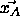
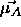
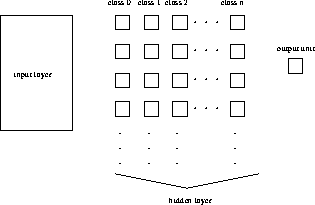

To start DLVQ, the learning function DLVQ, the update function DLVQ_Update, and the init function DLVQ_Weights have to be selected in the corresponding menus. The init functions of DLVQ differ a little from the normal function: if a DLVQ net is initialized, all hidden units are deleted.
As with learning rules CC and RCC the text field CYCLE in the control panel does not specify the number of learning cycles. This field is used to specify the maximal number of class units to be generated for each class during learning. The number of learning cycles is entered as the third parameter in the control panel (see below).
 : learning rate, specifies the step width of the mean
vector
: learning rate, specifies the step width of the mean
vector  , which is nearest to a pattern
, which is nearest to a pattern 
, towards this pattern. Remember that
is moved only, if is not assigned to the correct class
is not assigned to the correct class  . A typical
value is 0.03.
. A typical
value is 0.03.
 : learning rate, specifies the step width of a mean
vector
: learning rate, specifies the step width of a mean
vector  , to which a pattern of class
, to which a pattern of class  is falsely
assigned to, away from this pattern. A typical value is 0.03. Best
results can be achieved, if the condition
is falsely
assigned to, away from this pattern. A typical value is 0.03. Best
results can be achieved, if the condition  is
satisfied.
is
satisfied.
If the topology of a net fits to the DLVQ architecture SNNS will order the units and layers from left to right independent in the following way: input layer, hidden layer output layer. The hidden layer itself is ordered by classes.
The output layer must consist of only one unit. At the start of the learning phase it does not matter whether the output layer and the input layer are connected. If hidden units exist, they are fully connected with the input layer. The links between these layers contain the values of the the mean vectors. The output layer and the hidden layer are fully connected. All these links have the value 1 assigned.

The output pattern contains information on which class the input
pattern belongs to. The lowest class must have the name 0. If there are
n classes, the n-th class has the name n-1. If these conditions are
violated, an error occurs. Figure  shows the topology of a
net. In the bias of every class unit its class name is stored. It can be
retrieved by clicking on a class unit with right mouse button.
shows the topology of a
net. In the bias of every class unit its class name is stored. It can be
retrieved by clicking on a class unit with right mouse button.
Note: In the first implementation of DLVQ the input patterns were automatically normalized by the algorithm. This step was eliminated, since is produced undesired behavior in some cases. Now the user has to take all necessary steps to normalize the input vectors correctly before loading them into SNNS.